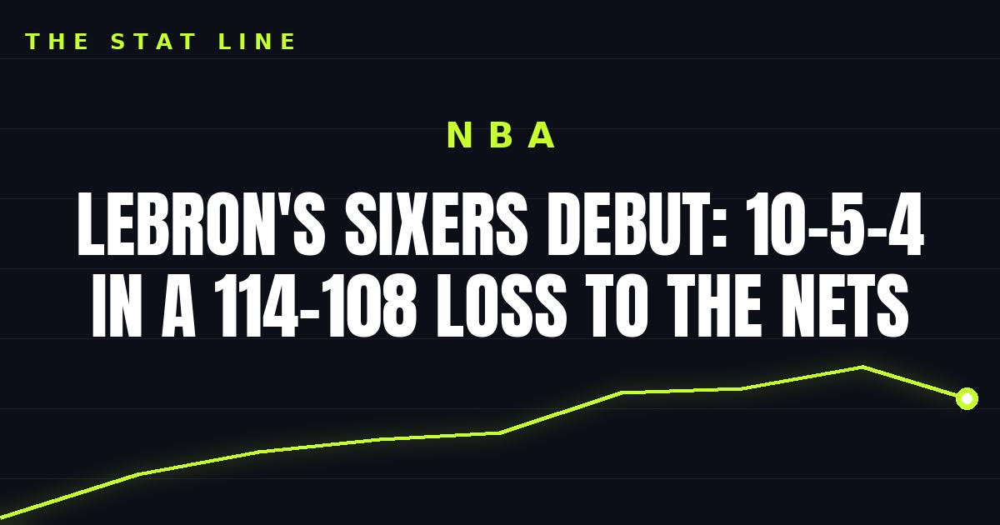

LeBron's Sixers debut: 10-5-4 in a 114-108 loss to the Nets
First night in Philly: LeBron ran point for 18 first-half minutes in a 114-108 preseason loss to Brooklyn — 10 points, 5 assists, 4 rebounds and a steal on 1-for-1 shooting.

Disclosure: this post contains affiliate links. I earn a commission on qualifying purchases.
First night in Philly
LeBron James played his first game in a 76ers uniform Thursday night, posting 10 points, 5 assists, 4 rebounds and a steal on 1-for-1 shooting in 18 first-half minutes of a 114-108 preseason loss to the Nets (Sixers Wire).
The stat line
10: 4; 5; 1; 1-for-1; 18 (first half)
The real story
The box score doesn't carry the night — the debut highlights do (Sky Sports). James spent all 18 of his minutes running point, and this was the first look at the projected starting five (Sixers Wire).
For a preseason opener, the read is simple: he didn't hunt shots (one field-goal attempt), he ran the offense, and Philly got its first look at what the lineup looks like with him on the ball.
Watch
Source: "HIGHLIGHTS from LeBron James' Philadelphia 76ers preseason debut 👑 | NBA on ESPN" — NBA on ESPN. Every highlight from the debut: his first bucket in a Sixers uniform and all 18 minutes of action (10 PTS, 4 REB, 5 AST, 1 STL) from the first half against Brooklyn.
Gear up: [Fanatics](https://fanatics.93n6tx.net/WOLjqe) via Fanatics